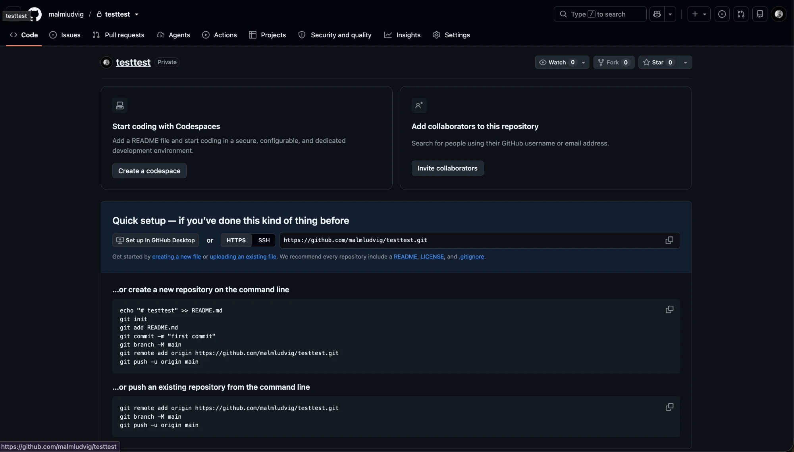

Git vecka 7
Spara versioner av din kod, ångra misstag och samarbeta – utan filer som heter Program_final_v2_NY.cs.
Dagens plan
- Varför Git? Vad är versionshantering?
- De tre platserna: arbetsmapp, staging och repository
- Installera och ställ in Git
- Ditt första repo:
init,status,add,commit - Titta i historiken och ångra
- Branches och merge
- GitHub:
push,pullochclone - Git i Visual Studio
- Övningar
1. Varför Git?
Git är ett program för versionshantering. Det sparar ögonblicksbilder av ditt projekt så att du alltid kan gå tillbaka.
| Utan Git | Med Git |
|---|---|
Kaffekoppen_kopia.zip, Kaffekoppen_FUNKAR.zip … | En mapp – hela historiken finns inuti |
| "Vad ändrade jag igår?" – ingen aning | git diff visar exakt vilka rader |
| Skickar filer fram och tillbaka på mejl | Alla jobbar i samma repo på GitHub |
| Råkar radera något → borta | Hämta tillbaka från en tidigare commit |
Git är programmet på din dator. GitHub är en webbplats där du kan lägga upp dina Git-repon och dela dem. Man kan använda Git helt utan GitHub.
2. De tre platserna
En fil i ett Git-projekt kan befinna sig på tre platser. Det här är det viktigaste att förstå:
flowchart LR A["Arbetsmapp
(dina filer)"] -- "git add" --> B["Staging
(redo att sparas)"] B -- "git commit" --> C["Repository
(historiken)"] C -- "git push" --> D["GitHub
(remote)"] D -- "git pull" --> A
| Begrepp | Betyder | Liknelse |
|---|---|---|
| Repository (repo) | Projektmappen + hela historiken (i den dolda mappen .git) | Ett fotoalbum |
| Arbetsmapp | Filerna du ser och ändrar i Visual Studio | Det du har framför dig just nu |
| Staging | Ändringar du valt ut till nästa commit | Personerna som ställer sig i bild |
| Commit | En sparad ögonblicksbild med ett meddelande | Ett foto i albumet |
| Branch | En egen spår av commits | Ett sidospår där du provar något |
| Remote | En kopia av repot på en server, t.ex. GitHub | En kopia av albumet hos en kompis |
3. Installera och ställ in Git
Ladda ner Git från git-scm.com (Windows: kör installationen med standardvalen). Öppna sedan en terminal – till exempel Git Bash eller terminalen i Visual Studio (View → Terminal).
git --version
git version 2.47.0.windows.1Berätta för Git vem du är. Det görs en gång per dator och syns på alla dina commits:
git config --global user.name "Ada Lovelace"
git config --global user.email "ada@exempel.se"
git config --global init.defaultBranch mainRader som börjar med ett gult kommando skriver du själv. Text efter # är kommentarer. Vanlig vit text är det som terminalen skriver ut.
4. Ditt första repo
Skapa ett projekt och ett repo
mkdir GitDemo
cd GitDemo
dotnet new console # skapar Program.cs och GitDemo.csproj
dotnet new gitignore # skapar .gitignore för C#-projekt
git init # gör mappen till ett Git-repo
Initialized empty Git repository in C:/Users/Ada/GitDemo/.git/.gitignore – filer Git ska strunta i
När du bygger projektet skapas mapparna bin/ och obj/. De går alltid att bygga om och ska inte sparas i Git. Filen .gitignore listar sådant:
bin/
obj/
.vs/git status – vad har hänt?
Kör git status ofta. Den berättar vilka filer som är ändrade och vad som ligger i staging.
git status
On branch main
No commits yet
Untracked files:
(use "git add <file>..." to include in what will be committed)
.gitignore
GitDemo.csproj
Program.cs
nothing added to commit but untracked files present (use "git add" to track)git add – välj vad som ska sparas
git add Program.cs # en fil
git add . # alla ändrade filer i mappengit commit – spara en ögonblicksbild
git commit -m "Skapa konsolprojekt"
[main (root-commit) 3f2a1c9] Skapa konsolprojekt
3 files changed, 512 insertions(+)Siffrorna 3f2a1c9 är commitens id (en hash). Varje commit får ett unikt id.
Arbetsflödet – om och om igen
- Ändra kod i Visual Studio
git status– vad har ändrats?git add .git commit -m "Beskriv vad du gjorde"
Bra commit-meddelanden
| Dåligt | Bra |
|---|---|
fix | Rätta studentrabatten när summan är över 200 kr |
asdf | Lägg till klassen Pastry med bäst före-datum |
massa ändringar | Dela upp i flera commits – en per sak |
Tumregel: meddelandet ska fortsätta meningen "Den här commiten kommer att …". Commita ofta – små commits är lätta att förstå och ångra.
5. Titta i historiken
git log --oneline # en rad per commit, nyast överst
a81d4e2 Lägg till klassen Drink
7c90b13 Lägg till basklassen Product
3f2a1c9 Skapa konsolprojekt
git diff # vad har ändrats sedan senaste commit (ej i staging)
git diff --staged # vad ligger i staging just nu
git show a81d4e2 # visa en specifik commitSå här ser git diff ut. Rader med − har tagits bort, rader med + har lagts till:
- public virtual decimal CalculatePrice() { return 0; }
+ public virtual decimal CalculatePrice() { return basePrice; }6. Ångra
| Situation | Kommando |
|---|---|
| Jag har ändrat en fil och vill ha tillbaka hur den såg ut vid senaste commit | git restore Program.cs |
| Jag la en fil i staging men vill ta bort den därifrån (ändringen finns kvar) | git restore --staged Program.cs |
| Jag skrev fel i senaste commit-meddelandet (inte pushat än) | git commit --amend -m "Nytt meddelande" |
| En gammal commit var fel – skapa en ny commit som tar bort ändringen | git revert a81d4e2 |
Se upp: git restore på en fil slänger dina osparade ändringar för gott. Ändringar som är commitade går däremot nästan alltid att få tillbaka.
7. Branches och merge
En branch är ett eget spår där du kan prova något nytt utan att förstöra main. När det fungerar slår du ihop (merge) det med main.
gitGraph commit id: "Skapa projekt" commit id: "Product" branch studentrabatt checkout studentrabatt commit id: "IsStudent" commit id: "Discount()" checkout main commit id: "Rätta stavfel" merge studentrabatt commit id: "Kvitto"
git branch # lista branches – * visar var du är
git switch -c studentrabatt # skapa en ny branch och gå dit
# ... ändra kod, add, commit ...
git switch main # gå tillbaka till main
git merge studentrabatt # hämta in ändringarna i main
git branch -d studentrabatt # ta bort branchen när den är klarMerge-konflikt
Om två branches har ändrat samma rad kan Git inte välja åt dig. Då blir det en konflikt och Git markerar raden i filen:
<<<<<<< HEAD
return basePrice + 5;
=======
return basePrice + 8;
>>>>>>> studentrabattSå löser du en konflikt
- Öppna filen. Överst (
HEAD) är din version, nederst den andra branchens. - Bestäm vad som ska stå kvar och ta bort markeringarna
<<<<<<<,=======och>>>>>>>. - Kontrollera att programmet bygger.
git add .ochgit commit– klart!
Visual Studio har ett eget verktyg för konflikter: klicka på filen i Git Changes och välj vilken sida du vill behålla.
8. GitHub: dela ditt repo
Skapa ett konto på github.com och ett nytt, tomt repository (bocka inte i README eller .gitignore). GitHub visar då en sida med Quick setup och de kommandon du behöver:

Kommandona från GitHub
…or create a new repository on the command line – du har inget lokalt repo än:
echo "# testtest" >> README.md # skapa en README-fil
git init # gör mappen till ett repo
git add README.md
git commit -m "first commit"
git branch -M main # döp branchen till main
git remote add origin https://github.com/malmludvig/testtest.git
git push -u origin main # skicka upp och koppla ihop…or push an existing repository from the command line – du har redan gjort git init och commits:
git remote add origin https://github.com/malmludvig/testtest.git
git branch -M main
git push -u origin mainByt malmludvig/testtest mot ditt eget användarnamn och repo. Har du följt avsnitt 4 har du redan ett repo – då är det det andra blocket du ska använda.
För projektet GitDemo från avsnitt 4 blir det alltså:
git remote add origin https://github.com/ditt-namn/GitDemo.git
git push -u origin main # första gången: -u kopplar ihop main med origin/main
git push # sedan räcker det så här| Kommando | Gör |
|---|---|
git clone <url> | Laddar ner ett repo från GitHub – med hela historiken |
git push | Skickar dina commits upp till GitHub |
git pull | Hämtar ner andras commits från GitHub |
Jobba i grupp: börja alltid med git pull innan du börjar koda, och git push när du är klar. Då blir det färre konflikter.
Första gången du pushar frågar Git efter inloggning. På Windows öppnas ett fönster där du loggar in på GitHub i webbläsaren.
9. Git i Visual Studio
Allt ovan går också att göra med knappar i Visual Studio:
| Terminal | Visual Studio |
|---|---|
git init | Git → Create Git Repository… (kan också skapa repot på GitHub direkt) |
git status / git diff | Fönstret Git Changes (View → Git Changes). Dubbelklicka en fil för att se ändringarna. |
git add | Plustecknet + vid filen (Stage) |
git commit -m | Skriv meddelandet och klicka Commit Staged (eller Commit All) |
git push / git pull | Pilarna ↑ och ↓ överst i Git Changes |
git switch -c | Branch-namnet längst ner till höger → New Branch |
git log | Git → View Branch History |
Det är bra att kunna kommandona – då förstår du vad knapparna gör, och kan använda Git i alla program och på alla datorer.
10. Övningar
Gör övningarna i en terminal. Försök själv först – öppna facit när du är klar.
Övning 1: Första commiten
- Skapa en ny mapp
GitOvningmed ett konsolprojekt och en.gitignore. - Gör mappen till ett Git-repo.
- Kör
git status. Varför syns intebin/ochobj/? - Lägg alla filer i staging och gör en commit med meddelandet "Skapa projekt".
Visa facit
mkdir GitOvning
cd GitOvning
dotnet new console
dotnet new gitignore
git init
git status
git add .
git commit -m "Skapa projekt"bin/ och obj/ syns inte eftersom de står i .gitignore. (Om du inte har byggt projektet än finns de inte heller.)
Övning 2: Ändra, titta, spara
- Ändra
Program.csså att programmet skriver ut ditt namn. - Kör
git statusochgit diff. Vad visar de? - Commita ändringen med ett bra meddelande.
- Gör två ändringar till, med en commit för varje. Visa historiken på en rad per commit.
Visa facit
git status # Program.cs står som "modified"
git diff # visar raden som togs bort (-) och lades till (+)
git add Program.cs
git commit -m "Skriv ut mitt namn"
# ... två ändringar till ...
git log --oneline
c4e1a90 Fråga efter användarens ålder
9b2f7d3 Skriv ut dagens datum
51aa0e6 Skriv ut mitt namn
2d8c3f1 Skapa projektÖvning 3: Ångra en ändring
- Radera allt innehåll i
Program.csoch spara filen. (Ja, verkligen!) - Kör
git status. - Få tillbaka filen som den var vid senaste commit.
Visa facit
git status
modified: Program.cs
git restore Program.cs
git status
nothing to commit, working tree cleanFilen är tillbaka eftersom den fanns i en commit. Därför ska man commita ofta!
Övning 4: En branch
- Skapa en branch
menyoch gå till den. - Lägg till en enkel meny i
Program.csoch commita. - Gå tillbaka till
main. Titta iProgram.cs– vart tog menyn vägen? - Merga in
menyimainoch ta bort branchen.
Visa facit
git switch -c meny
# ... skriv menyn ...
git add .
git commit -m "Lägg till meny"
git switch main # menyn är borta – den finns bara på branchen meny
git merge meny # nu finns menyn i main också
git branch -d menyFilerna i arbetsmappen byts ut när du byter branch. Inget är borta – det ligger på en annan branch.
Övning 5: Skapa en konflikt (och lös den)
- Skapa en branch
halsning. Ändra raden medConsole.WriteLinetill "Hej från branchen!" och commita. - Gå till
main. Ändra samma rad till "Hej från main!" och commita. - Merga
halsningin imain. Vad händer? - Lös konflikten så att programmet skriver ut båda raderna.
Visa facit
git switch -c halsning
# ändra raden, sedan:
git commit -am "Hälsning från branchen"
git switch main
# ändra samma rad, sedan:
git commit -am "Hälsning från main"
git merge halsning
CONFLICT (content): Merge conflict in Program.csÖppna Program.cs, ta bort markeringarna och behåll båda raderna:
Console.WriteLine("Hej från main!");
Console.WriteLine("Hej från branchen!");git add Program.cs
git commit -m "Slå ihop hälsningarna"-am är en genväg för git add + git commit -m på filer som Git redan känner till.
Övning 6: Upp på GitHub
- Skapa ett tomt repository på GitHub som heter
GitOvning. - Koppla ihop ditt lokala repo med det och pusha.
- Ladda om sidan på GitHub – syns dina commits?
- Med en kompis: klona varandras repon, gör en ändring, pusha. Hämta sedan kompisens ändring i ditt eget repo.
Visa facit
git remote add origin https://github.com/ditt-namn/GitOvning.git
git push -u origin main
# Kompisen:
git clone https://github.com/ditt-namn/GitOvning.git
cd GitOvning
# ... ändra ...
git commit -am "Ändring från kompisen"
git push
# Du:
git pullFör att kompisen ska få pusha till ditt repo behöver du bjuda in hen: Settings → Collaborators → Add people på GitHub.
Extra: Lägg upp Kaffekoppen
Öppna ditt Kaffekoppen-projekt från vecka 5 i Visual Studio. Använd Git → Create Git Repository… för att skapa ett repo och lägga upp det på GitHub – helt utan terminalen. Gör sedan en ändring och commita och pusha från fönstret Git Changes.
11. Sammanfattning
| Kommando | Gör |
|---|---|
git init | Skapar ett nytt repo i mappen |
git status | Visar vad som har ändrats |
git add . | Lägger ändringar i staging |
git commit -m "…" | Sparar en ögonblicksbild |
git log --oneline | Visar historiken |
git diff | Visar exakt vad som ändrats |
git restore <fil> | Ångrar ändringar sedan senaste commit |
git switch -c <namn> | Skapar och byter till en ny branch |
git merge <namn> | Slår ihop en branch med den du står på |
git clone <url> | Laddar ner ett repo |
git push / git pull | Skickar upp / hämtar ner commits |
Klart när
- ☐ Du kan förklara skillnaden mellan arbetsmapp, staging och repository.
- ☐ Du kan skapa ett repo och göra commits med bra meddelanden.
- ☐ Du vet varför
bin/ochobj/står i.gitignore. - ☐ Du kan ångra en ändring med
git restore. - ☐ Du kan skapa en branch, merga den och lösa en enkel konflikt.
- ☐ Du har pushat ett repo till GitHub.